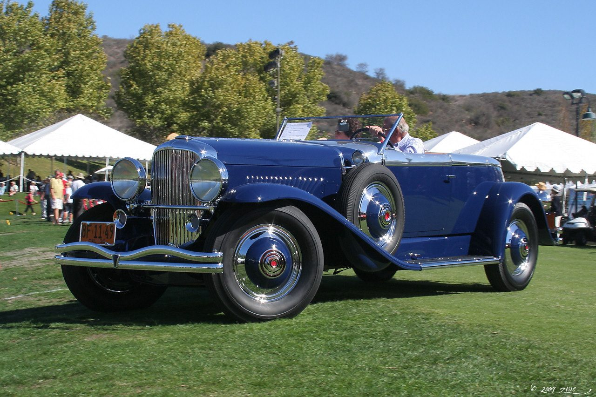

1928
Pre-War

Duesenberg Model J
USA
- Engine6.9L straight-8
- Power265 hp
- Top speed116 mph
The most extravagant American car ever built, with a straight-eight so powerful it could outrun anything of its day. Hand-built, coachbuilt and utterly gorgeous — the embodiment of Jazz Age excess.
Photo: Rex Gray · CC BY 2.0